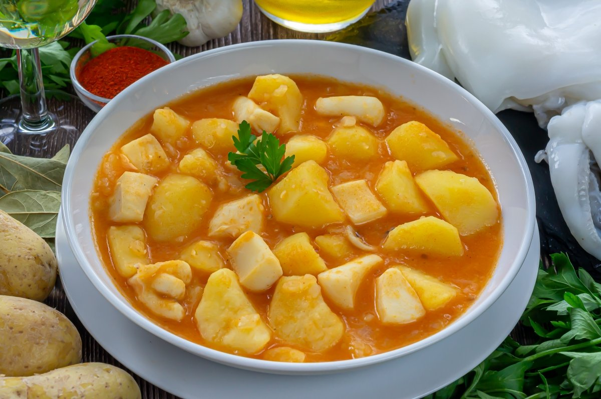

Papas con choco

Preparar unas papas con choco no nos va a costar ningún esfuerzo. En resumen, tenemos que partir de un sofrito
de cebolla y tomate, al igual que la gran mayoría de las recetas tradicionales de guisos. En ese sofrito vamos
a rehogar también la sepia, para que se vaya haciendo, pues tarda más que las patatas. Un rato más de cocción
con un caldo de pescado y cuando tengamos las patatas tiernas habremos terminado. No dejes de leer hasta el
final de la receta pues te vamos a contar cómo puedes hacer para que este plato de papas con choco quede con
un caldo con cuerpo la mar de apetecible.
- 500 g de choco o sepia limpios
- 750 g de patatas para cocer
- 1 cebolla
- 3 o 4 dientes de ajo
- ½ cucharadita de pimentón dulce
- 150 ml de vino blanco (medio vaso)
- 600 ml de caldo de pescado
- 1 o 2 hojas de laurel
- 150 g de tomate triturado (natural o en conserva)
- 3 o 4 cucharadas de aceite de oliva virgen extra
- Pimienta negra molida
- Sal
- Trocear el choco o sepia. Retirar la parte dura de las aletas, separar la cabeza y cortar la parte dura separando las patas. Cortar en trozos del tamaño de un bocado el cuerpo, patas y aletas. Salpimentar
- En una olla, calentar el aceite de oliva y sofreír la cebolla picada
- Echar el choco o sepia a la olla con el ajo picado. Rehogar un par de minutos
- Mojar con el vino, dejar que cueza un par de minutos. Echar el tomate, mezclar bien y calentar a fuego medio hasta que reduzca
- Cubrir con el caldo de pescado y añadir el laurel. Calentar a fuego fuerte y, cuando hierva, dejar que cueza a fuego medio unos 10 minutos
- Pelar las patatas y trocearlas
- Añadir las patatas a la olla y cocer a fuego medio hasta que estén tiernas. Salpimentar al gusto a mitad de la cocción
- Incorporar al caldo 2 o 3 patatas cocidas trituradas
- Reposar unos minutos y servir